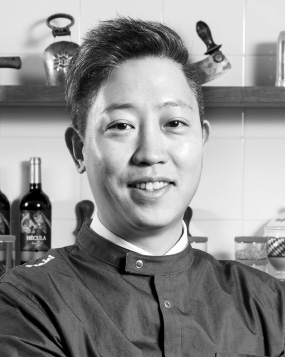

블루메쯔는 단순히 고기를 파는 곳을 넘어,
고기에 대한 존중과 정성을 담아 아름다운 요리로 탄생시키는 공간입니다.
독일 전통 레시피, 정직한 재료, 그리고
조리의 온도와 시간까지 — 본질에 집중합니다.
“Delicious must be beautiful.”
— BLUEMETZ
블루메쯔는 단순히 고기를 파는 곳을 넘어,
고기에 대한 존중과 정성을 담아 아름다운 요리로 탄생시키는 공간입니다.
독일 전통 레시피, 정직한 재료, 그리고
조리의 온도와 시간까지 — 본질에 집중합니다.
“Delicious must be beautiful.”
— BLUEMETZ

독일 전통 육가공 기술과 조리 철학을 바탕으로,
소시지와 고기의 ‘본연의 아름다움’을 식탁 위로 옮깁니다.